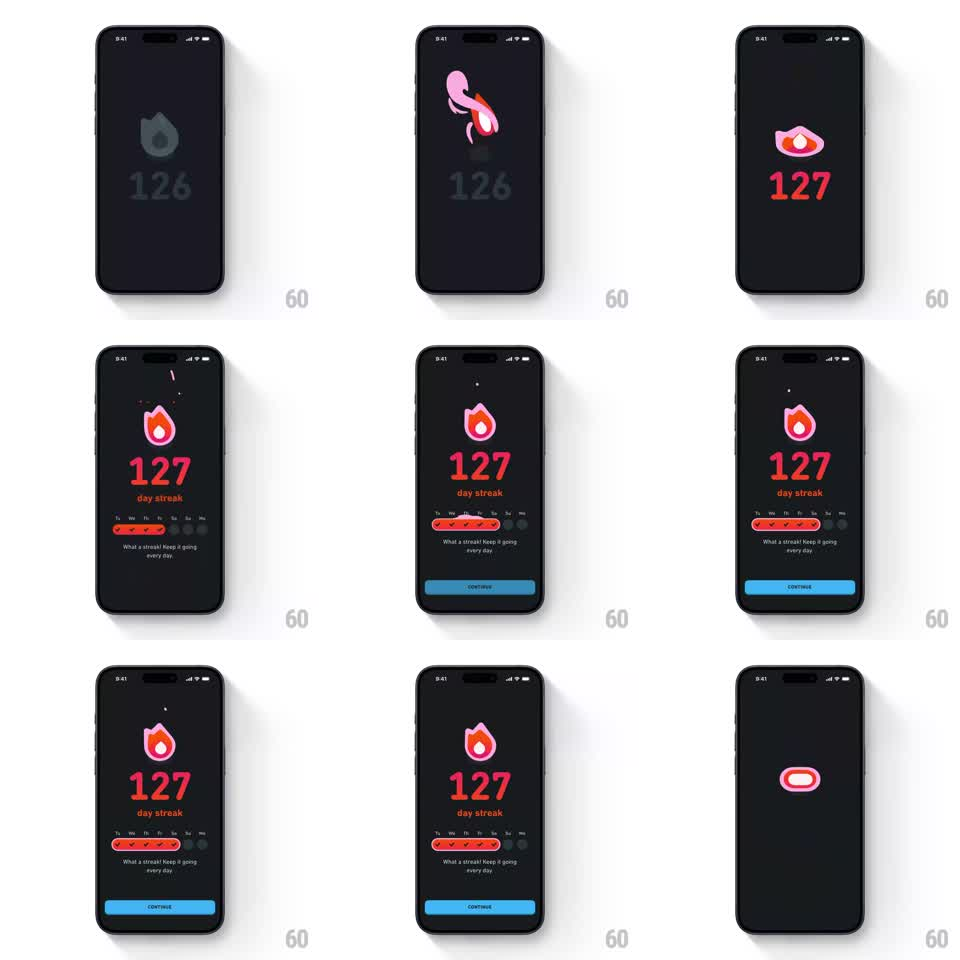

Media
Frame-by-frame

Rebuild this animation 1:1: Duolingo's streak milestone celebration - the gray flame icon ignites through a colorful morph, the counter rolls 126 to 127, sparks fly, and the week strip, "day streak" label, subline, and CONTINUE button stagger in below.

Rebuild this animation 1:1: Duolingo's streak milestone celebration - the gray flame icon ignites through a colorful morph, the counter rolls 126 to 127, sparks fly, and the week strip, "day streak" label, subline, and CONTINUE button stagger in below. ## Integration Integration: stack-agnostic spec - springs given as stiffness/damping, timed motions as duration + curve; map every value to your framework and animation library of choice. ## Scene Dark charcoal screen. Center top: the streak flame icon. Below it: the oversized streak number, "day streak" label, a week strip (Tu W Th F Sa Su Mo) with the past days checked in red, the subline "What a streak! Keep it going every day.", and a full-width blue CONTINUE button. ## Motion spec Pattern: multi-stage ignite + rolling counter + staggered reveals, ~2.5s. - Ignite: the gray flame swirls through a pink-orange morph (400ms, ease-in-out) and settles saturated red with a glow pulse (scale 1 -> 1.12 -> 1, 300ms). - Counter: the number rolls odometer-style 126 -> 127 (400ms), the digits turning red as they land. - Sparks: 3-5 ember particles drift up from the flame tip (fade over 800ms), one small burst on ignition. - Stagger: "day streak", week strip (checks fill left to right, 50ms each), subline, and CONTINUE slide/fade in sequence (200ms each, 80ms apart). - Idle: flame flickers (scale 1 -> 1.05, 350ms alternate). ## Calibration - The number color change is tied to the roll landing, not the flame ignition. - Keep sparks few and small - the flame is the hero, not confetti. ## Reduced motion Flame and counter cross-fade to the final state (250ms); all text appears at once; no sparks. ## Don't miss - The week strip's checked cells use the same red as the flame. - CONTINUE is Duolingo blue and full-width - the only blue element on screen.